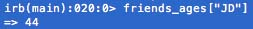

Ross Reckons


Today I want to take a little time to talk about Arrays and Hashes, what they are, and how they're different. We got a lot of exposure to Arrays and Hashes this week and they are interesting, powerful tools.
An array is simply a list of objects. You can add/remove objects to it and call on the list of objects when you want. For example, you could have an array that looks like this: This is a list that has string and integer objects. It's nice to know that Arrays can hold both of these kinds of objects (it can even hold other arrays!), but typically Arrays are used to list things that go together. For example: or . These lists go together because you can quickly see that they are a list of ages and a list of names respectively.
Another important thing to know about arrays is how Ruby indexes them. It counts each object starting with 0. This means the first object is at 0 (I'm trying to refer to it as the 'zeroth' to really grasp this concept), the second object would be 1, and the last one is the number of objects in your array minus 1. To illustrate this, let's use our names example from above. If I were to call each name seperately, it would look like this: . Here I'm using names[index] and Ruby is returning the value in that index. When I call names[0], Ross is being returned. To call the last value I use the index number 3 - in this case names[3] - and Brian is returned.
Hashes are also collections of data, but they consist of key-value pairs. Instead of being indexed by a number like arrays, each value has an associated key that you use to call it. The nice thing is here is you get to determine what the keys are! Ok, let's look at an example; let's say that now instead of storing just ages, I want to know the age of my (only) 4 friends: . Here we have the keys, which is a list of my friends names and each corresponding value is that friend's age. Now if I want to look up JD's age, I can easily: 
As you can see, both are collections of data, but with Hashes you're assigning the value to the key, so values are easier to look up (like we did with JD's age). Arrays are nice because they're simple, but if I wanted to call on a certain value, I would have to know exactly where in the index that value is.
I hope this was helpful, but if you have any feedback please use those links in the top-right corner to let me know!
Archive